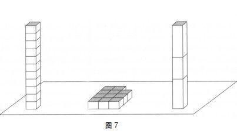

看照片预测竞选胜出者，为何其准确率可高达70%？
随着人类进化不断完善，系统1可以对生物体生存必须解决的主要问题提供一个连续的评估，这些问题包括：事情进展得怎么样了？我们面临的是威胁还是机遇？一切都正常吗？我应该是前进还是退避呢？这些问题也许对于生存在城市中的人而言，不像对大草原上的羚羊那样紧急，但我们有不断进化的遗传神经机制，可以持续不断地对威胁水平进行评估。我们通常用好与坏来评价不同情形，要么说要避开这种情况要么说可以泰然处之，没有问题。人的好心情和认知放松与动物对安全和熟悉程度的判断是相当的。
如果想找一个“基本判断”的典型例子，想想只需一瞥就能区分朋友和敌人的能力就是了。这种能力能够提高人们在危险世界的生存概率，而这种专属能力也在不断增强。我在普林斯顿大学的同事亚历克斯·托多罗夫（Alex Todorov）曾经对与陌生人接触的安全性问题作出快速判断这一能力的生物学根源进行了探索。他认为我们生来就具有判断的能力，只需瞥一眼陌生人的脸，就能对这个人的两点重要事实作出判断：他有多强势（因此存在潜在的威胁性）；这个人有多可信（不管他的用意可能是友好的还是充满敌意的）。脸型为判断提供了许多暗示：方下巴就是强势的信号。面部表情（微笑或皱眉）是对陌生人意图的判断提示，方下巴加上瘪嘴唇也许就预示着有麻烦了。看脸形的精确性不是很高：圆下巴并不代表温顺，笑容（在某种程度上）也是可以伪装的。不过，即使对陌生人作出判断的能力不高，具备这种能力也是我们的生存优势。
这种古老的机制在现代社会得到重新利用：它对人们如何选举有些影响。托多罗夫向他的学生展示了一些人脸的图片，有时展示的时间只有0.1秒，他让这些学生按不同属性对这些面部图片进行评估，这些属性包括可爱程度和做事能力。结果所有学生对这些图片的评估结果非常一致。托多罗夫展示给学生的那些人脸图片并不是随意组合的，而是参加竞选的那些政治家的照片。大选结束后，托多罗夫将选举结果和普林斯顿大学学生所作出的能力评估进行了比较，这些学生当时并不了解这些候选人的任何政治背景，仅凭自己对这些照片的匆匆一瞥就作出了评估。事实证明，约有70%的参议员、国会议员和地方长官的竞选活动的胜出者也正是那些在照片评估中获得较高评价的人。这一惊人结果在芬兰的全国大选中得到证实，同样的情况也发生在英国的地区选举中，澳大利亚、德国和墨西哥的众多选举中也发生过类似事件。令人惊奇的是（至少对我而言是这样的），在托多罗夫的研究中，能力评估远比可爱程度的评估对选举结果的预见能力强。
托多罗夫发现，人们总会结合力量和可信度两方面因素来评估一个人的能力。刚毅的方下巴和自信的微笑便可告诉我们，这个人很有能力。没有证据显示这些面部特征确实能预示某些政治家可以当选，但关于人们对胜出和出局候选人的判断研究显示，我们往往在投票前就会对那些不具备我们认可的面部特征的候选人持否定态度。在他的研究中，失败者引起的（负面）情感回应更强烈，我将这个例子称为“判断启发法”案例，接下来的章节中会沿用这个说法。投票者尝试着对候选人将来的任职表现生成一种印象，他们又转而依靠系统2快速自主地作出一种更加简单的判断，这一系统只有在必要时才会作出这一判断。
许多政治学者也循着托多罗夫最初研究的路子继续深入研究这一问题，他们划定了一类投票者，这类投票者往往会不由自主地听从系统1的指挥。这些投票者经常看电视，对政治却所知甚少，而那些政治学者在他们身上找到了自己一直在寻找的东西。不出所料，对于那些信息贫乏、爱看电视的投票者来说，面部特征表现出的能力对其投票的影响较大，其受影响程度约为那些信息丰富、看电视少的投票者的3倍。显然，系统1对投票选择的影响因人而异，下文中我们还会遇到一些体现个体差异性的例子。
当然，系统1理解语言，这种理解是建立在一些基本判断基础之上的，而这些判断通常又是在洞察事实和理解信息的基础上作出的。这些判断包括对相似度和代表性的判断，对因果关系的属性以及对联想和样本的可用性的判断。尽管判断的结果是用来满足任务要求的，但是没有具体任务时，这些判断活动照样也在进行着。
基本判断的内容很多，但并不是每个可能的属性都需要判断。例如，我们可以简单看看图7。
一眼看去，你便会对该图的很多特征有个初步印象。你知道左右两个长方体一样高，也很相似。然而，左边那个长方体的方块数和铺在平面上的方块数是不是一样，这可不是瞥一眼就能明了的事，而且你也想不出这堆方块能摞成多高的长方体。

为了证实左面长方体的方块数目和中间的方块数目相同，你需要数一下这两堆方块，对比一下结果，这个活动只有系统2能完成。